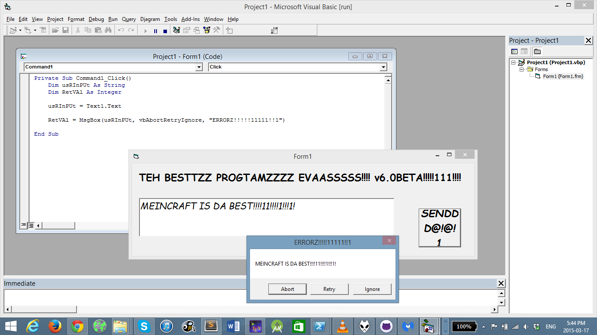

This is supposed to be a joke program that I wrote to be nostalgic, since VB.net was one of my first languages.
My only excuse is that I was bored. Of haskell.

EDIT: I made a version in VB6. Actually several but the IDE kept crashing and I kept forgetting to save. See the vb6/ folder for the source.
Released under the WTFPL v2.0
DISCLAIMER: I do not normally code like this. Again, this a joke program, and I would never put this kind of code into production. At least I hope I won't be forced to.